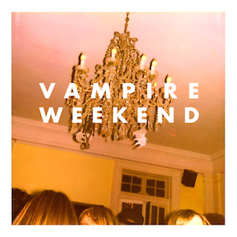

대표곡: A-Punk
플레이리스트
- "Mansard Roof" 2:07
- "Oxford Comma" 3:15
- "A-Punk" 2:17
- "Cape Cod Kwassa Kwassa" 3:34
- "M79" 4:15
- "Campus" 2:56
- "Bryn" 2:13
- "One (Blake's Got a New Face)" 3:13
- "I Stand Corrected" 2:39
- "Walcott" 3:41
- "The Kids Don't Stand a Chance"